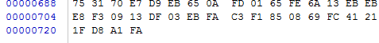
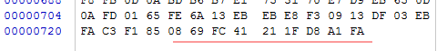
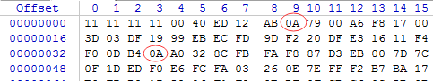
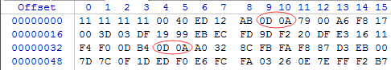

python中遇到的Windows系统中换行符的一个坑
问题描述
在项目hex2bin（ https://github.com/Root-lee/hex2bin ） 中，需要实现将一个txt文本中的十六进制码转换成相应的ascii码符号并写入一个.dat文件中，以用于声纳项目中的幅相校正操作。为了实现功能先在Linux虚拟机中写了一个小的python程序用来测试可行性，代码如下：1
2
3
4
5
6input = open('raw.txt','r')
raw = input.read()
output = open('bin.dat','w+')
for i in range(len(raw)/2):
print chr(int(raw[2*i:2*i+2],16))
output.write(chr(int(raw[2*i:2*i+2],16)))
该程序在Linux系统中运行可以得到预期结果，但是在Windows中加上相关GUI，程序经过简单修改之后，运行后得到的结果却有点偏差。
预期结果：

错误结果：

上面两图是用winhex软件打开本软件运行结果.dat文件的情形，第一张图是预期结果的文件结尾，第二张图是得到的错误结果的文件结尾，对比可以发现，Windows下运行最后生成的结果比预期结果多了几位。
问题分析
为了找出问题所在，我对错误结果和预期结果进行一位一位仔细比对，发现错误结果比预期结果多出的位数都是”0D”，而且每个多出来的”0D”后面都紧跟着一个”0A”：
预期结果：

错误结果：

16进制“0D”对应ascii码是13，查询ascii码表得知13对应的是换行符CR，16进制“0A”对应ascii码是10，查询ascii码表得知13对应的是换行符LF，猜测可能与windows系统中的换行符有关：Window系统中的换行符使用\r\n表示，而Linux系统中使用\n表示，所以当写入换行符\n时，windows自动在\n的前面加上一个\r以符合windows系统的换行要求。所以结果中的所有”0A”都被自动换成了”0D0A”。
解决方法
Windows 平台上 Python 区分 Binary 和 ASCII 模式。ASCII 模式下换行符会在读写时自动换为 \r\n ，但是Binary模式下却不会自动替换，所以我们只需将文件读写模式由ASCII模式改为Binary模式即可，具体到我们的代码中，我们只需将代码1
output = open('bin.dat','w+')
改为：1
output = open('bin.dat','wb+')
即可解决问题。